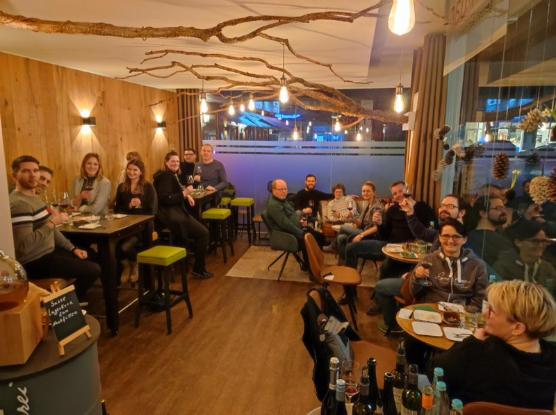

Tasting

Fr · 25. Sept. 2026 · 19:30 Uhr
Wein- & Käse-Abend
Sechs ausgewählte Weine — Weiß, Rosé und Rot — kombiniert mit passenden Käsesorten. Mit Einführung in Wein & Käse, Terroir-Wissen und entspannter Atmosphäre.
49 €p. P.
Platz sichern